Define the decision
Identify who uses the result, what action it changes, and what an error costs.
00 DATA SCIENCE / CRISP-DM
A hands-on tutorial for understanding how data science actually gets done: frame the decision, inspect the data, prepare it without leakage, establish a baseline, evaluate honestly, and communicate what the result does—and does not—support.
Select a phase to jump in
START HERE HOW TO USE THIS TUTORIAL
Each phase combines a focused explanation, a failure mode, a worked example, a checkpoint and a concrete project artifact. Read the theory first, then use the notebook labs to inspect and modify the implementation.
Identify who uses the result, what action it changes, and what an error costs.
Start with a simple baseline and let complexity justify itself out of sample.
Make the workflow reproducible, explain the limits, and separate evidence from opinion.
Read the six phases and answer the checkpoint questions.
Run all three cases, inspect outputs and complete the exercises.
Use the six templates to produce a small evidence trail.
Each Project artifact is a real working file, not a quiz score. The six artifacts connect into one audit trail: decision brief, data profile, prepared-data workflow, model comparison, evaluation report and decision memo. Blank templates and completed churn examples are linked from every artifact card.
01 BUSINESS UNDERSTANDING
The most expensive mistake usually happens before modelling: the problem is too vague, the user is unclear, or the metric does not represent the cost of error.
Learning objectives
Business understanding is a contract between analysis and action. It states how the model output becomes a decision and what evidence would justify using it.
Problem statement template
For [decision owner], estimate [target] at [decision time] so that [action] can be prioritised. Prefer a model only if it improves [decision metric] over [baseline], subject to [constraints].
| Case | Decision | Target | Primary metric | Error cost |
|---|---|---|---|---|
| Customer churn | Who enters a limited retention campaign? | Whether a customer churns | Recall, precision, campaign cost | Missed churners; unnecessary discounts |
| House prices | Which properties pass a budget screen? | Transaction price | MAE, RMSE | Overpayment; missed opportunity |
| Demand forecast | How should capacity and inventory be set? | Monthly demand | MAE, MAPE | Excess inventory; stock-outs |
research_brief = {
"decision": "Which customers should receive a retention offer?",
"target": "churned within the next 30 days",
"decision_time": "month-end, before the campaign starts",
"baseline": "contact everyone, or target only by tenure",
"metric": "recall at an acceptable contact volume",
"constraint": "retention budget covers 20% of customers",
"failure_cost": "missed churn vs unnecessary discount",
}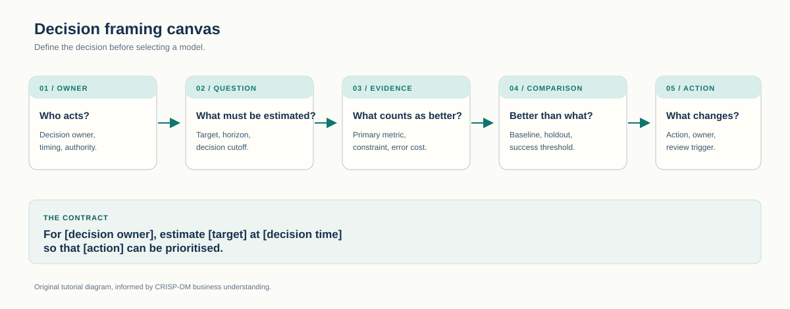
Consider a churn model with excellent ranking performance. If the retention campaign only runs for one week and can contact 20 customers, the useful output is not a general probability score; it is a ranked list that fits that capacity. The decision also needs a stop rule: if the predicted benefit of the offer is lower than its cost, contacting the next customer destroys value even when the model is right about churn risk.
This distinction matters because a churn predictor estimates risk, not the causal effect of a retention action. A high-risk customer may churn even after receiving a discount, while a medium-risk customer may be highly responsive. The simplified lab ranks churn risk because it is easier to teach and audit. A real campaign evaluation would compare treatment and control groups and estimate incremental uplift.
A good objective also separates the model metric from the decision metric. ROC AUC measures ranking across all thresholds. Recall measures how many relevant cases are found at one chosen threshold. Campaign profit combines expected retained revenue, offer cost, and contact capacity. All three can be useful, but they answer different questions and should not be treated as interchangeable leaderboard scores.
The baseline is not merely a weak model. It is the action the organisation would take without the new system: contact nobody, contact everyone, use a simple rule, or continue with an existing score. Comparing against that operational alternative is more informative than comparing against zero.
Before modelling, ask
Who will use the output? What can they change? When must it be ready? What would make them reject it? What is the evidence threshold for adoption?
“Predict customer behaviour and improve satisfaction” is not. A stronger statement names the monthly decision, the future 30-day churn target, the limited contact budget, and recall as the first evaluation metric.
Exercise · repair a vague objective
A team proposes: “Predict house prices accurately to improve decision-making.” Rewrite it as a testable research brief.
“At the time a shortlist is created, estimate the sale price in HKD millions so the acquisition team can reject properties outside its budget. Compare against a linear baseline using MAE; investigate whether RMSE is stable enough for properties above HKD 8 million. Exclude features recorded after the listing decision.”
Defines who uses the result, what action changes, how success is measured, and what evidence would stop the project.
Done when another person can explain the decision, deadline, baseline and cost of error without seeing the data.
02 DATA UNDERSTANDING
Data understanding is not immediate cleaning. First document the fields, coverage, timing, missingness, and target; then decide whether the data can answer the question at all.
Learning objectives
Who is represented, over which period, and which groups are absent?
What are the units? Is a value a snapshot, period sum, or derived field?
Which fields are genuinely available when the prediction must be made?
What do missingness, duplicates, outliers, and the target distribution imply?
import pandas as pd
df = pd.read_csv("data/customer_churn.csv")
print(df.shape)
print(df.dtypes)
print(df.isna().mean().sort_values(ascending=False))
print(df["churned"].value_counts(normalize=True))
df.describe(include="all").T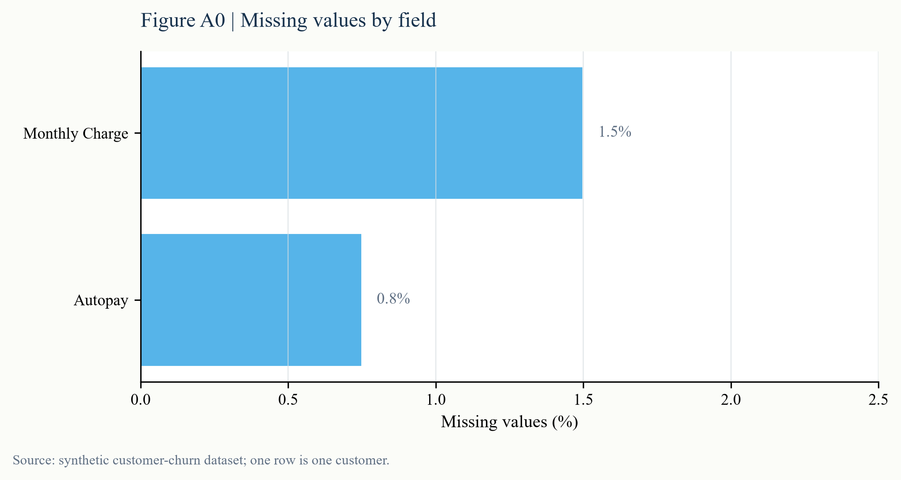
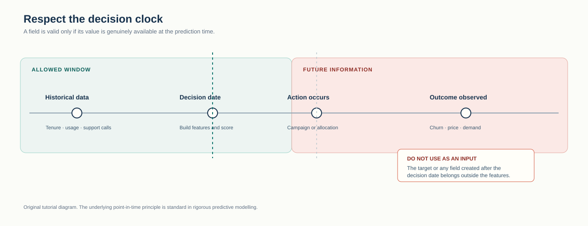
Every predictive dataset contains at least three timelines: when an event happened, when its value became available to the organisation, and when the model must make a decision. These are not the same clock. An invoice may be dated at month-end but loaded into the warehouse three days later. A reported price may describe a completed transaction long after the property was listed. A churn label may only become known after the prediction would have been used. If the pipeline ignores availability dates, it can create a model that performs well only because it sees the future.
A data dictionary should therefore include meaning, unit, data type, source, update frequency, valid range, and availability time. “Monthly charge” is incomplete documentation; “current recurring charge in billing currency at month-end close” gives a reviewer enough information to challenge its timing. For each model input, ask whether the exact value would have been available before the prediction cutoff.
Missing values, duplicate records and outliers are not automatically errors. A missing support-call count may mean no calls occurred, data was not captured, or the customer had no active service. An extreme value may be a legitimate VIP customer or a unit-conversion mistake. Profiling comes first because the correct preparation decision depends on the mechanism that created the value. Cleaning immediately can erase the evidence needed to understand the problem.
Sample coverage matters as much as column quality. The synthetic churn data contains four regions and a single historical snapshot; it cannot show whether relationships change through time or whether one region is systematically under-recorded. A table of clean columns can still represent the wrong people or the wrong period. That limitation belongs in the data profile and in the final memo, not in a hidden code comment.
Interpretation comes with the number
“1.5% missing” is an observation. “Charge is missing more often for new customers, so median imputation may hide a tenure-related mechanism” is a useful finding. Always pair the summary statistic with a consequence.
Severe class imbalance can make accuracy look strong while the minority class is barely detected. The target distribution determines the baseline, metric, and threshold choices.
Exercise · identify leakage risk
A churn dataset contains `days_since_last_login`, `contract_type`, `cancellation_reason`, and `refund_issued_after_cancel`. Which fields need special timing checks?
`cancellation_reason` and `refund_issued_after_cancel` are likely created only after churn and cannot be inputs to a pre-churn prediction. `days_since_last_login` and `contract_type` may be valid, but their exact snapshot dates still need verification.
Documents sources, field meanings, coverage, target balance, missingness and leakage risks.
Done when every model input has a documented availability time and at least one leakage hypothesis has been tested.
03 DATA PREPARATION
Encoding, imputation, and scaling are part of the model pipeline. Learn them from training data only, then apply the learned rules to validation and test data.
Learning objectives
Rule of thumb
Missing-value imputation, scaling, and encoding belong inside the Pipeline. Fitting them on all data before splitting is a subtle but material leakage.
from sklearn.compose import ColumnTransformer
from sklearn.impute import SimpleImputer
from sklearn.pipeline import Pipeline
from sklearn.preprocessing import OneHotEncoder, StandardScaler
preprocess = ColumnTransformer([
("numeric", Pipeline([
("impute", SimpleImputer(strategy="median")),
("scale", StandardScaler()),
]), numeric_columns),
("categorical", Pipeline([
("impute", SimpleImputer(strategy="most_frequent")),
("encode", OneHotEncoder(handle_unknown="ignore")),
]), categorical_columns),
])Split first. Learn all data-derived parameters from the training set only.
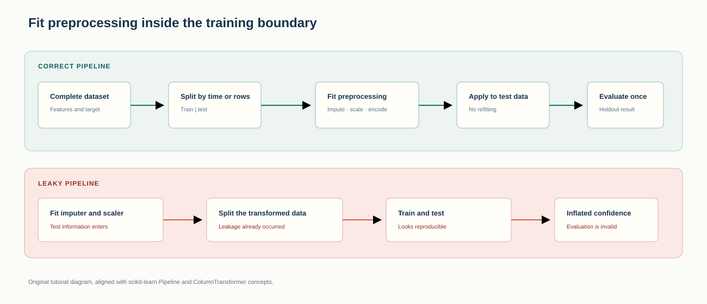
Leakage occurs whenever training information would not be available when the prediction is made. Target leakage is the most direct form: a cancellation reason, refund note, or post-decision status predicts the target because the field is created by the target event. Preprocessing leakage is subtler: a scaler learns the mean and variance from the test set, a median imputer borrows values from the test set, or a feature-selection step chooses columns using all outcomes. The individual operation may be mathematically simple, but the reported validation score no longer represents a genuine future decision.
A Pipeline helps because it attaches transformations to a model and forces each transformation to be fitted inside every training fold. It does not block direct leakage from target-derived columns. The engineer still has to document field timing and decide whether a column could exist at prediction time. Reproducibility and validity are therefore separate requirements: a leaky workflow can run perfectly on every machine and still produce the wrong result.
Categorical encoding, missing-value imputation and outlier handling must use training-only statistics. If category levels are rare, enable `handle_unknown="ignore"` so unseen levels in test data do not crash the pipeline. If a target encoding is introduced later, it needs an internal cross-fitting scheme because the encoding otherwise carries information about each row's outcome.
Random splitting is reasonable for exchangeable customer records when the goal is to generalise to similar customers. Stratification preserves the target balance. A time series needs a chronological split because a future month can never train a model that is supposed to forecast the past. When the target is measured over a horizon, add a gap between training and validation if future label information overlaps the training period.
Preserve enough evidence to rebuild the prepared dataset: source version, generation seed, row counts, schema, split dates and software versions. Store transformation parameters inside the fitted pipeline rather than in ad hoc variables. This is what makes the test set reusable once rather than silently tuned across many experiments.
Random splitting lets the model learn from future observations and then predict the past. A chronological split is necessary for a realistic out-of-sample test.
Exercise · repair the split
A monthly demand team normalises all 60 months, creates lag features, and then randomly selects 12 test months. Name the main problems and propose a safer protocol.
Random selection destroys chronology, and scaling before splitting leaks future distribution information. Split the first 48 months from the final 12, fit scaling and lag-generation rules on the training period, and apply those frozen rules to the later months.
A reproducible split, preprocessing and feature-generation pipeline.
Done when every learned transformation is fitted inside training only and a clean rerun produces the same row counts.
04 MODELING
Establish the simplest defensible answer first. A more complex model is useful only when it improves the decision metric under the same split, preprocessing, and evaluation protocol.
Learning objectives
Check whether a transparent linear score is sufficient before adding a tree.
A stable and interpretable first benchmark for a continuous target.
Use the same month last year. This is a surprisingly difficult baseline to beat.
| Model | Accuracy | Precision | Recall | ROC AUC |
|---|---|---|---|---|
| Logistic Regression | — | — | — | — |
| Decision Tree | — | — | — | — |
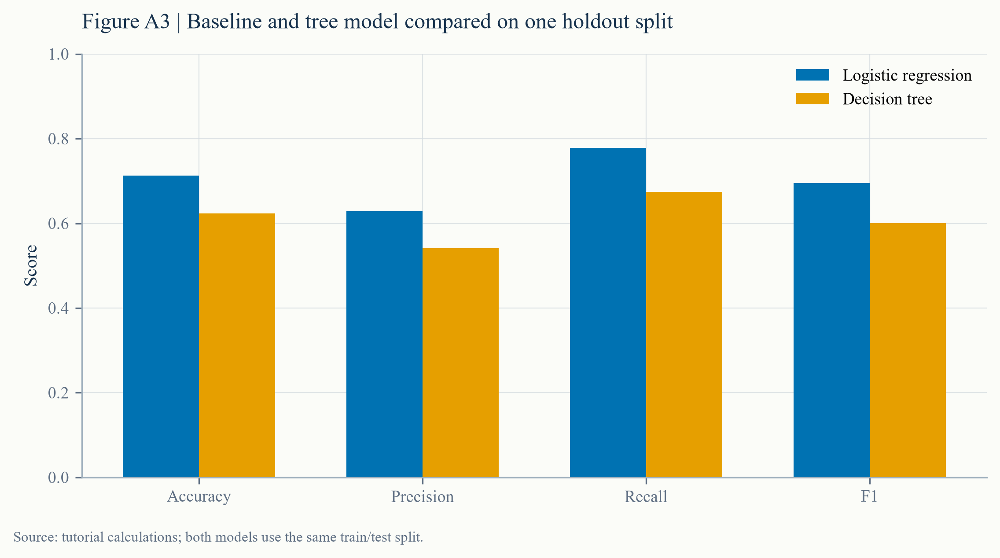
The churn threshold is set to 0.40. A higher threshold makes the model more conservative; a lower threshold catches more potential churners but creates more false alerts.
model = Pipeline([
("prepare", preprocess),
("model", LogisticRegression(max_iter=1_000, random_state=42)),
])
model.fit(X_train, y_train)
probability = model.predict_proba(X_test)[:, 1]
prediction = (probability >= 0.40).astype(int)Start with the weakest defensible rule, then add one capability at a time. For churn, a reasonable ladder is: rank by a simple business rule, fit logistic regression, then test a shallow tree for nonlinearities. For house prices, compare a mean prediction, linear regression, and a limited random forest. For demand, compare last month's value, the same month last year, and a simple trend-plus-seasonality model. Each rung adds one explanation for why performance might improve.
This structure protects the analysis from two failures. The first is unearned complexity: a large model wins by a tiny amount on one split, but nobody can explain why or maintain it. The second is false simplicity: a linear model may be inadequate when interactions or thresholds are central, but that should be demonstrated rather than assumed. The comparison should be narrow and interpretable enough that a reviewer can ask what changed.
Hyperparameters belong to a model family, while split rules, target definition and evaluation metrics belong to the research protocol. Changing `max_depth` is a tuning decision; changing the prediction horizon is a new research question. Keep those changes separate. Otherwise a model-selection history becomes a collection of incomparable experiments.
In the house-price case, the random forest does not beat the linear baseline. That result is intentionally retained. The synthetic price process is mostly additive, the sample is small, and the default tree uses a different inductive bias. A portfolio that shows only successful model upgrades is less credible than one that records a well-designed comparison and accepts the answer.
No. In the house-price lab, the random forest has higher MAE and RMSE than the linear baseline. The result is retained because model complexity must demonstrate value out of sample.
Exercise · build a baseline ladder
For a monthly demand forecast, propose three models in increasing complexity and write the question each one is meant to answer.
A last-value forecast asks whether the simplest persistence rule is enough. Seasonal naive asks whether the same month last year captures recurring demand. A trend-plus-seasonal model asks whether adding a smooth trend and explicit seasonality improves error without leaking future observations.
A compact table of models evaluated under the same split, preprocessing and metric protocol.
Done when the baseline, candidate, random seed, split and decision metric can be compared without opening the notebook.
05 EVALUATION
Evaluation is not a model leaderboard. It is a judgment about whether the evidence supports the decision under the expected constraints and costs.
Learning objectives
The average absolute miss in the same units as the target. Easy to explain.
Penalises large misses more strongly. Useful when extreme errors matter.
Precision measures the hit rate; recall measures how many relevant cases were found.
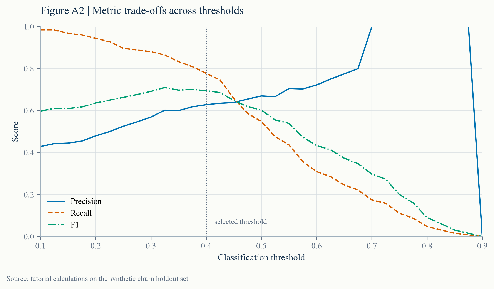
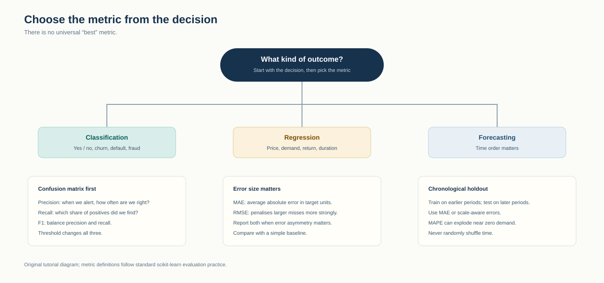
Accuracy asks how often the model is correct. Precision asks what share of positive predictions are correct. Recall asks what share of actual positives were found. F1 balances those two. Each answers a different question, and none contains the cost of a campaign, the value of a retained customer, or the capacity of the operations team. A complete evaluation translates the model metric into those decision consequences.
For regression, MAE is usually easier to explain because it remains in the target's units. RMSE gives larger errors more weight, so it is useful when a catastrophic miss is much worse than several small misses. For demand, MAPE can become unstable near zero, so an MAE table and absolute forecast errors should accompany it. For classification, ROC AUC can summarise ranking, but it does not choose the operating threshold. Report the threshold explicitly.
A single holdout split is itself an estimate. It can be lucky or unlucky, especially with a small sample. For exchangeable data, compare fold-to-fold variation or repeat the split with several seeds. For time series, use rolling or expanding origin evaluations. Do not repeatedly adjust the final holdout; that converts a confirmation set back into a training signal.
Inspect where errors occur before accepting an aggregate score. A model can look stable overall while failing on new customers, high-price properties, a particular month, or the exact cases that trigger an expensive action. Report the known gap between the teaching experiment and a real deployment, including sample size, synthetic data, and the absence of a separate tuning period.
No. If only 5% of cases are positive, a model that always predicts the negative class can reach 95% accuracy without finding a single positive case. Inspect the class distribution, confusion matrix, and decision-specific metric.
Exercise · choose the operating metric
A retention team can contact only 150 customers. Missing a likely churner is expensive, but repeated contact also annoys customers. Which metrics and artefact should it inspect before deployment?
Start with recall at the available contact capacity, then inspect precision, the confusion matrix and the score distribution. Compare contact volume, expected retained revenue and false-alert cost. A threshold curve and capacity-based table matter more than accuracy alone.
Records the confirmation protocol, metric trade-offs, error patterns, uncertainty and recommendation.
Done when the result includes a baseline, a threshold, an error slice and a statement of what cannot be claimed.
06 DEPLOYMENT & COMMUNICATION
In an analytical project, a reproducible repository, a clear explanation, and an explicit monitoring plan can matter more than wrapping the model in a complex API.
Learning objectives
Move from inputs to outputs with a documented command and tested environment.
Summarise the problem, evidence, uncertainty, recommendation, and limits.
Track data distributions, prediction quality, and business outcomes over time.
python -m pytest -q
python scripts/build_examples.py
python scripts/build_case_pages.py
python -m http.server 8000
# Open: http://localhost:8000“We compared a baseline with a more complex model under the same protocol. On this holdout set and decision rule, the baseline performed better, so the current evidence does not justify added complexity. The main limitation is…”
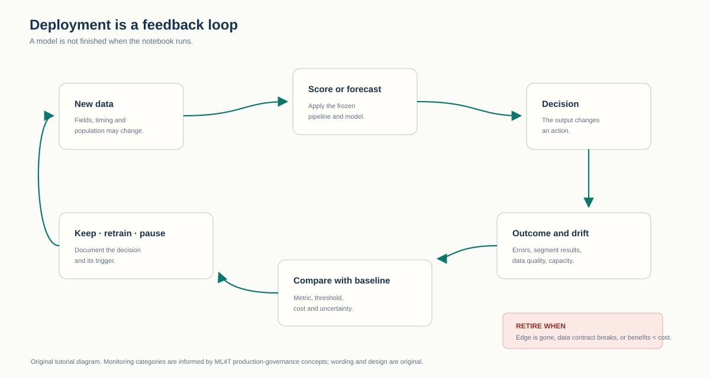
| Mode | What exists | What must be monitored | Appropriate when |
|---|---|---|---|
| Reproducible notebook | Code, data rules, outputs and explanation | Dependency changes and stale inputs | Teaching or one-off analysis |
| Scheduled report | Automated refresh with reviewed outputs | Data freshness, failures and metric drift | Recurring decision support |
| Decision service | Versioned model, interface and ownership | Latency, errors, input drift and outcomes | The action occurs frequently and at scale |
A monitoring plan starts with the decision the model supports. Track the population and features used at scoring time, prediction volume, missing rates, score distribution and realised outcomes when they become observable. Compare those values with a documented reference period. An alert should trigger a specific action—investigate, recalculate, retrain, pause or retire—and have an owner. A chart without a trigger is only latent evidence.
A concise model card should state intended use, prohibited use, target, training period, important features, evaluation data, headline metrics, limitations and maintenance owner. It should also identify dependencies: upstream data contracts, libraries and assumptions that could break. This prevents a notebook from becoming an undocumented institutional memory.
Communication follows the same evidence chain. Start with the decision and result, then show the baseline, the uncertainty, and the conditions under which the recommendation changes. Put technical detail in an appendix. A useful memo does not narrate every cell; it helps a decision-maker distinguish evidence, assumption and recommendation.
Re-evaluate when the product, customer mix, data source, or error cost changes; when important feature distributions drift; or when realised outcomes remain materially different from expectations.
Exercise · define a monitoring trigger
The churn model’s training period has 42% churn and 1.5% missing charge values. Write one input-monitoring trigger and one outcome-monitoring trigger.
Input trigger example: investigate if the score population’s churn rate or missing-charge share moves materially outside the reference range for two consecutive campaign cycles. Outcome trigger example: pause and review if recall or campaign profit falls below the agreed threshold once realised churn is observed.
A one-page stakeholder summary connecting the question, evidence, recommendation, limitations and monitoring plan.
Done when a non-technical reader can take the recommended action and know what would trigger a review.
CASE LABS EXECUTED NOTEBOOKS
Each lab opens a rendered notebook inside this tutorial. You can inspect every code cell and chart, download the notebook, or continue to the raw source.
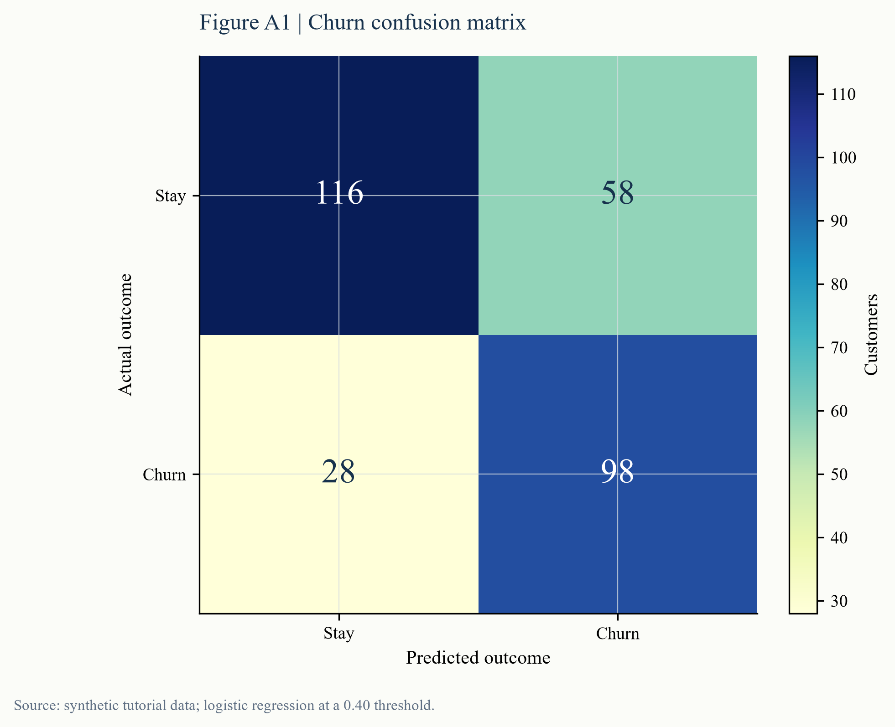
LAB A · CLASSIFICATIONCompare logistic regression and a decision tree, then choose a threshold using campaign costs.
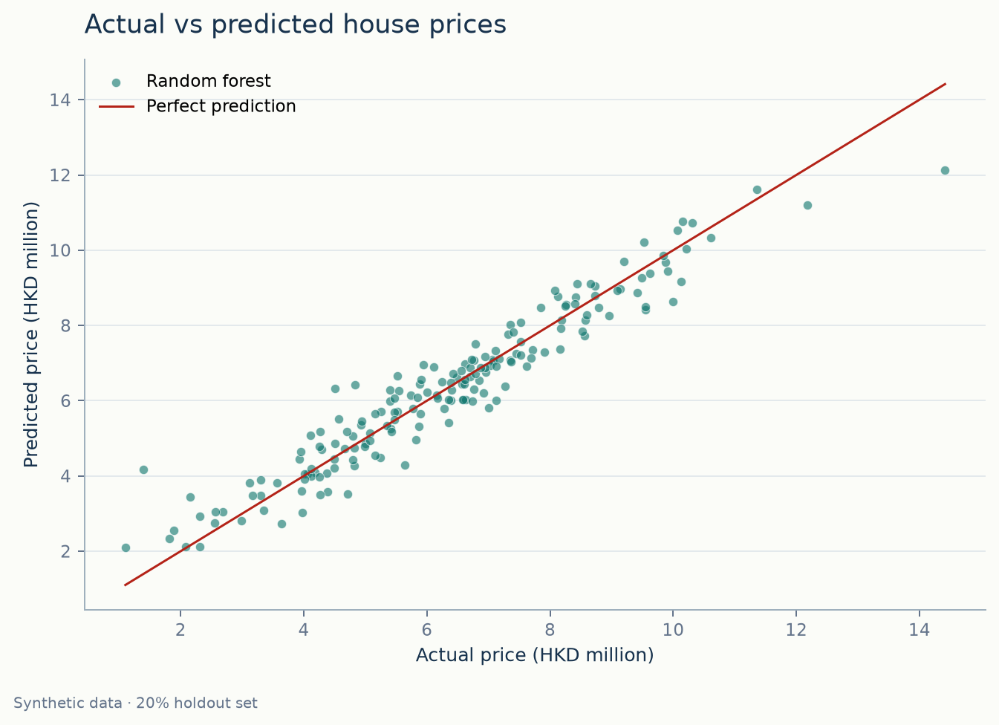
LAB B · REGRESSIONTest whether a random forest beats a transparent linear baseline on an untouched holdout set.
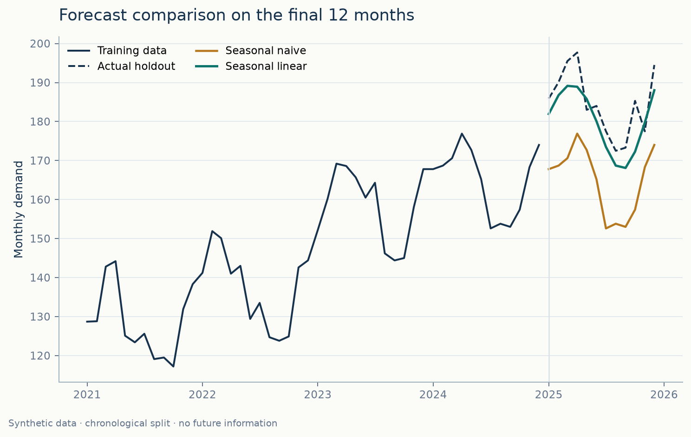
LAB C · FORECASTINGKeep time in order and test a seasonal-linear forecast against the seasonal naive baseline.
REVIEW PROJECT CHECKLIST
CRISP-DM is iterative. A problem found in evaluation should return the team to the research question, data preparation, or modelling protocol.
THE TAKEAWAY
CRISP-DM is not six labels to memorise. It is a control system for preventing premature modelling, misaligned objectives, duplicated work, and false confidence.